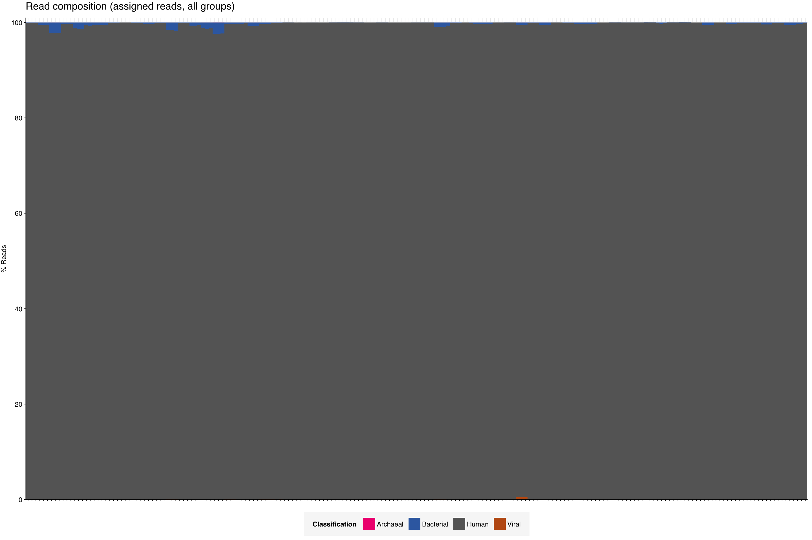
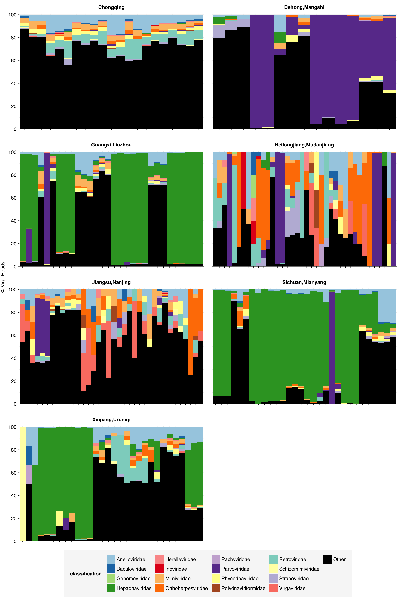
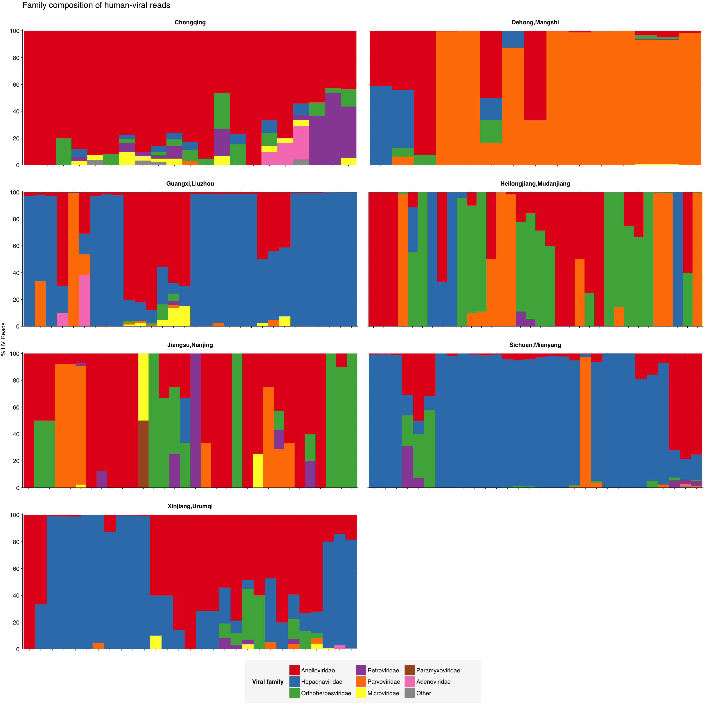

I’d like to thank Lenni for giving me feedback on this and Will for providing me with access to this rmarkdown file.
This one of the studies that we hope to discuss in our third blog post, which will cover the metagenomic analysis of whole blood/plasma. In this notebook, I analyze Mengyi 2023, a dataset from China with 200 pools of plasma, where each pool contains 160 samples from 7 different locations, for a total of 10,720 samples.
1 Raw data
1.1 About
This dataset from China has 200 pools of plasma, where each pool contains 160 samples from 7 different locations between 2012-2018, for a total of 10,720 samples. This paper did not discuss the number of individuals that contributed to the samples, but we’re going to attempt to contact the authors to get this information (this shouldn’t hold up any further analysis, but would be good to have this information). They did DNA sequencing for each pool, with 150 base pair paired-end sequencing (2x150 bp).
1.1.1 Sample + library preparation
The following excerpt from the paper describes the sample and library preparation process. It’s crucial to note that while blood samples were initially collected from volunteers, these samples were converted to plasma through ultracentrifugation prior to sequencing:
From January 1, 2012, to December 31, 2018, a total of 10,720 blood samples of 10 ml each were randomly selected from voluntary blood donors in 7 regions. The blood samples taken from various places were mixed in units of 160 (each 100 μl) for ultracentrifugation (32,000 rpm, 120 min, maximum centrifugal radius of 91.9 mm). Afterward, we rinsed and resuspended the precipitate with 500 μl PBS.
The pooled suspensions were subjected to extraction of total DNA using QIAamp® DNA Blood mini Kit (QIAGEN Cat. NO.160019269, Frankfurt, Germany), DNA concentration was measured by Equalbit® 1 × dsDNA HS Assay Kit (Vazyme Cat. NO. 7E302K9, Nanjing, China).
The metagenomic library was constructed using KAPA HyperPlus Kit (KAPA Cat. NO. 0000097583, Boston, USA) with dual-indexed Adapters (KAPA Cat. NO. 0000093370, Boston, USA), the DNA was fragmented to 250 bp approximately by the enzyme at 37 °C for 20 min, after end repair and A-tailing, adapter ligation, post-ligation cleanup, library amplification, and post-amplification cleanup, the library was constructed.
Agilent 2100 Bioanalyzer (Agilent Technologies, Beijing, China) was used for library quality control, and qualified DNA library was sent to the Novogene company to sequence in HiSeq 4500.
1.2 Quality control metrics
In total, these 200 samples contained 3.4B read pairs. The samples had 8.2M - 30.1M (mean 17.1M) read pairs each.
Number of read pairs, total bases and % of duplicates all look good.
Code
# Prepare databasic_stats_raw_metrics<-basic_stats_raw%>%select(library,location, `# Read pairs` =n_read_pairs, `Total base pairs\n(approx)` =n_bases_approx, `% Duplicates\n(FASTQC)` =percent_duplicates)%>%pivot_longer(-(library:location), names_to ="metric", values_to ="value")%>%mutate(metric =fct_inorder(metric))# Set up plot templatesg_basic<-ggplot(basic_stats_raw_metrics, aes(x =library, y =value, fill=location))+geom_col(position ="dodge")+scale_x_discrete()+scale_fill_brewer(palette ="Dark2")+scale_y_continuous(expand =c(0, 0))+expand_limits(y =c(0, 100))+facet_grid(metric~., scales ="free", space ="free_x", switch ="y")+theme_kit+theme( axis.title.y =element_blank(), strip.text.y =element_text(face ="plain"))g_basic
Adapter content is low. As we’d expect, we see higher quality Q scores near the beginning of the read and a gradual decline towards the end of the read, however all positions seem to have a Q score of 35 which means that our reads are ~99.97% accurate. When looking at the Q score over all sequences, we can see a sharp peak after 35, which closely follows the previous plot, indicating high read quality.
Code
# Set up plotting templatesg_qual_raw<-ggplot(mapping=aes(linetype=read_pair, group=interaction(sample,read_pair)))+scale_linetype_discrete(name ="Read Pair")+guides(color=guide_legend(nrow=2,byrow=TRUE), linetype =guide_legend(nrow=2,byrow=TRUE))+theme_base# Visualize adaptersg_adapters_raw<-g_qual_raw+geom_line(aes(x=position, y=pc_adapters), data=adapter_stats_raw)+scale_y_continuous(name="% Adapters", limits=c(0,5), expand=c(0,0))+scale_x_continuous(name="Position", limits=c(0,NA), breaks=seq(0,500,20), expand=c(0,0))+facet_grid(.~adapter)g_adapters_raw
The average fraction of reads at each stage in the preprocessing pipeline is shown in the following table. Reads lost during trimming and filtering approximately matches what we’d expect based on the raw adapter content. Deduplication loses us about 10% of reads which matched the amount of estimated duplicated reads by QC. Low ribodepletion is observed which makes sense because they only sequneced DNA.
Code
# TODO: Group by pool size as well# Count read lossesn_reads_rel<-basic_stats%>%select(sample, stage, percent_duplicates, n_read_pairs)%>%group_by(sample)%>%arrange(sample, stage)%>%mutate(p_reads_retained =n_read_pairs/lag(n_read_pairs), p_reads_lost =1-p_reads_retained, p_reads_retained_abs =n_read_pairs/n_read_pairs[1], p_reads_lost_abs =1-p_reads_retained_abs, p_reads_lost_abs_marginal =p_reads_lost_abs-lag(p_reads_lost_abs))n_reads_rel_display<-n_reads_rel%>%rename(Stage=stage)%>%group_by(Stage)%>%summarize(`% Total Reads Lost (Cumulative)` =paste0(round(min(p_reads_lost_abs*100),1), "-", round(max(p_reads_lost_abs*100),1), " (mean ", round(mean(p_reads_lost_abs*100),1), ")"), `% Total Reads Lost (Marginal)` =paste0(round(min(p_reads_lost_abs_marginal*100),1), "-", round(max(p_reads_lost_abs_marginal*100),1), " (mean ", round(mean(p_reads_lost_abs_marginal*100),1), ")"), .groups="drop")%>%filter(Stage!="raw_concat")%>%mutate(Stage =Stage%>%as.numeric%>%factor(labels=c("Trimming & filtering", "Deduplication", "Initial ribodepletion", "Secondary ribodepletion")))n_reads_rel_display
2.2 Quality control metrics
These plots below show the trends from above in each sample.
Trimming and cleaning gets rid of Illumnia unviersal adapter as well as polyg, and we see a decrease in polya. Q score remain the same during read cleaning when looking at the positions, with the end of the read actually improving in score. Q scores across all sequences look pretty much the same throughout cleaning.
As expected, ribosomal reads are near 0% for every sample.
Code
# Calculate reads lost during ribodepletion (approximation for % ribosomal reads)reads_ribo<-n_reads_rel%>%filter(stage%in%c("dedup", "ribo_secondary"))%>%group_by(sample)%>%summarize(p_reads_ribo=1-n_read_pairs[2]/n_read_pairs[1], .groups ="drop")%>%inner_join(libraries, by ='sample')reads_ribo_summ<-reads_ribo%>%group_by(sample)%>%summarize(min=min(p_reads_ribo), max=max(p_reads_ribo), mean=mean(p_reads_ribo), .groups ="drop")%>%inner_join(libraries, by ='sample')g_reads_ribo<-ggplot(reads_ribo, aes(x=library, y=p_reads_ribo))+geom_point()+scale_y_continuous(name="Approx % ribosomal reads", limits=c(0,1), breaks=seq(0,1,0.2), expand=c(0,0), labels =function(y)y*100)+theme_kitg_reads_ribo
Ribodepletion aims to get rid of ribosomal RNA, so we don’t expect DNA sequencing to have this.
3 Taxonomic composition
3.1 High-level composition
To assess the high-level composition of the reads, I ran the files through Kraken2 and summarized the results with Bracken.
The groups listed below were created by Will:
Filtered (removed during cleaning)
Duplicate (removed during deduplication)
Ribosomal (removed during ribodepletion)
Unassigned (non-ribosomal reads that were not assigned to any taxon by Kraken/Bracken)
Bacterial (non-ribosomal reads assigned to the Bacteria domain by Kraken/Bracken)
Archaeal (non-ribosomal reads assigned to the Archaea domain by Kraken/Bracken)
Viral (non-ribosomal reads assigned to the Viruses domain by Kraken/Bracken)
Human (non-ribosomal reads assigned to the Eukarya domain by Kraken/Bracken)
Additionally, there are two groups:
All groups (all of the categories above)
Minor groups (Archeal, Viral, Human, Other)
Code
# Prepare plotting templatesg_comp_base<-ggplot(mapping=aes(x=library, y=p_reads, fill=classification))+scale_x_discrete(name="Plasma pool")+theme_kit+theme(plot.title =element_text(hjust=0, face="plain", size=rel(1.5)))scale_y_pc_reads<-purrr::partial(scale_y_continuous, name ="% Reads", expand =c(0,0), labels =function(y)y*100)geom_comp<-purrr::partial(geom_col, position ="stack", width =1)classification_colors<-brewer.pal(8, "Accent")names(classification_colors)<-c("Filtered", "Duplicate", "Ribosomal", "Unassigned", "Bacterial", "Archaeal", "Viral", "Human")# Update the scale_fill_manual function to use the named vectorscale_fill_classification<-function(){scale_fill_manual(values =classification_colors, name ="Classification")}# Plot overall compositiong_comp<-g_comp_base+geom_comp(data =comp)+scale_y_pc_reads(limits =c(0,1.01), breaks =seq(0,1,0.2))+scale_fill_classification()+ggtitle("Read composition (all reads, all groups)")g_comp
Code
# Repeat for classified reads onlyg_comp_assigned<-g_comp_base+geom_comp(data =comp_assigned)+scale_y_pc_reads(limits =c(0,1.01), breaks =seq(0,1,0.2))+scale_fill_classification()+ggtitle("Read composition (assigned reads, all groups)")g_comp_assigned

Code
# Plot composition of minor componentsg_comp_minor<-g_comp_base+geom_comp(data=comp_minor)+scale_y_pc_reads()+scale_fill_classification()+ggtitle("Read composition (all reads, minor groups)")g_comp_minor
Code
g_comp_assigned_minor<-g_comp_base+geom_comp(data=comp_assigned_minor)+scale_y_pc_reads()+scale_fill_classification()+ggtitle("Read composition (assigned reads, minor groups)")g_comp_assigned_minor
3.2 Total viral content
Total viral fraction average \(1.03 \times 10^{-4}\) across samples. As a fraction of assigned (rather than total) reads, this jumped to \(1.28 \times 10^{-4}\):
Warning: Transformation introduced infinite values in continuous x-axis
3.3 Taxonomic composition of viruses
The one dominant viruses we see is Hepadnaviridae. The threshold for the label “other” are the set of families that make up less than 20% composition in all samples (the only reason I did this was because there were too many matches).
Code
major_threshold<-0.20# Identify major viral familiesviral_families_major_tab<-viral_families%>%group_by(name, taxid)%>%summarize(p_reads_viral_max =max(p_reads_viral), .groups="drop")%>%filter(p_reads_viral_max>=major_threshold)viral_families_major_list<-viral_families_major_tab%>%pull(name)viral_families_major<-viral_families%>%filter(name%in%viral_families_major_list)%>%select(name, taxid, sample, p_reads_viral)viral_families_minor<-viral_families_major%>%group_by(sample)%>%summarize(p_reads_viral_major =sum(p_reads_viral), .groups ="drop")%>%mutate(name ="Other", taxid=NA, p_reads_viral =1-p_reads_viral_major)%>%select(name, taxid, sample, p_reads_viral)viral_families_display<-viral_families_major%>%bind_rows(viral_families_minor)%>%arrange(desc(p_reads_viral))%>%mutate(name =factor(name, levels=c(viral_families_major_list, "Other")))%>%rename(p_reads =p_reads_viral, classification=name)%>%inner_join(libraries, by='sample')# Create a custom color palette with up to 20 colorscustom_palette<-c(brewer.pal(8, "Set2"),brewer.pal(8, "Set1"),brewer.pal(4, "Pastel1"))# Plotg_families<-g_comp_base+geom_comp(data=viral_families_display)+scale_y_continuous(name="% Viral Reads", limits=c(0,1.01), breaks =seq(0,1,0.2), expand=c(0,0), labels =function(y)y*100)+scale_fill_manual(values =custom_palette)g_families

4 Human-infecting virus reads
4.1 Overall relative abundance
I calculated the relative abundance of human-infecting viruses in two ways:
First, as the total number of deduplicated human-virus reads in each sample, divided by the number of raw reads (“All reads”).
Second, as a fraction of preprocessed (cleaned, deduplicated, computationally ribodepleted) reads (“Preprocessed reads”).
Composition of HV reads was changed from when looking at all viral reads. The two dominant viruses we see are Anellovirdae and Hepadnaviridae. The threshold for the label “other” are the set of families that make up less than 5% composition in all samples.
Code
threshold_major_family<-0.05# Count reads for each human-viral familyhv_family_counts<-hv_reads_family%>%group_by(sample, name, taxid)%>%count(name ="n_reads_hv")%>%group_by(sample)%>%mutate(p_reads_hv =n_reads_hv/sum(n_reads_hv))# Identify high-ranking families and group othershv_family_major_tab<-hv_family_counts%>%group_by(name)%>%filter(p_reads_hv==max(p_reads_hv))%>%filter(row_number()==1)%>%arrange(desc(p_reads_hv))%>%filter(p_reads_hv>threshold_major_family)hv_family_counts_major<-hv_family_counts%>%mutate(name_display =ifelse(name%in%hv_family_major_tab$name, name, "Other"))%>%group_by(sample, name_display)%>%summarize(n_reads_hv =sum(n_reads_hv), p_reads_hv =sum(p_reads_hv), .groups="drop")%>%mutate(name_display =factor(name_display, levels =c(hv_family_major_tab$name, "Other")))hv_family_counts_display<-hv_family_counts_major%>%rename(p_reads =p_reads_hv, classification =name_display)%>%inner_join(libraries, by ='sample')# Plotg_hv_family<-g_comp_base+geom_col(data=hv_family_counts_display, position ="stack", width=1)+scale_y_continuous(name="% HV Reads", limits=c(0,1.01), breaks =seq(0,1,0.2), expand=c(0,0), labels =function(y)y*100)+scale_fill_brewer(palette ="Accent", name ="Viral family")+labs(title="Family composition of human-viral reads")+guides(fill=guide_legend(ncol=4))+theme(plot.title =element_text(size=rel(1.4), hjust=0, face="plain"))g_hv_family

Code
# Get most prominent families for texthv_family_collate<-hv_family_counts%>%group_by(name, taxid)%>%summarize(n_reads_tot =sum(n_reads_hv), p_reads_max =max(p_reads_hv), .groups="drop")%>%arrange(desc(n_reads_tot))hv_family_collate
4.3 Species analysis
To get a good overview of families, genera, and species, we can look at a Sankey plot where the magnitude of relative abundance, averaged over all samples, is shown in parentheses.
Code
# Function to create linkscreate_links<-function(data){family_to_genus<-data%>%filter(!is.na(genus))%>%group_by(family, genus)%>%summarise(value =n(), .groups ="drop")%>%mutate(source =family, target =genus)genus_to_species<-data%>%group_by(genus, species)%>%summarise(value =n(), .groups ="drop")%>%mutate(source =genus, target =species)family_to_species<-data%>%filter(is.na(genus))%>%group_by(family, species)%>%summarise(value =n(), .groups ="drop")%>%mutate(source =family, target =species)bind_rows(family_to_genus, genus_to_species, family_to_species)%>%filter(!is.na(source))}# Function to create nodescreate_nodes<-function(links){data.frame( name =c(links$source, links$target)%>%unique())}# Function to prepare data for Sankey diagramprepare_sankey_data<-function(links, nodes){links$IDsource<-match(links$source, nodes$name)-1links$IDtarget<-match(links$target, nodes$name)-1list(links =links, nodes =nodes)}# Function to create Sankey plotcreate_sankey_plot<-function(sankey_data){sankeyNetwork( Links =sankey_data$links, Nodes =sankey_data$nodes, Source ="IDsource", Target ="IDtarget", Value ="value", NodeID ="name", sinksRight =TRUE, nodeWidth =25, fontSize =14,)}save_sankey_as_png<-function(sankey_plot, width=1000, height=800){# Save the plot as an HTML filesaveWidget(sankey_plot, sprintf('%s/sankey.html',data_dir))}format_scientific<-function(x, digits=2){sapply(x, function(val){if(is.na(val)||abs(val)<1e-15){return("0")}else{exponent<-floor(log10(abs(val)))coef<-val/10^exponent#return(sprintf("%.1f × 10^%d", round(coef, digits), exponent))# May or may not be smart, just keeping magnitudereturn(sprintf("10^%d", exponent))}})}data<-result%>%mutate(across(c(genus_n_reads_tot, genus_ra_reads_tot), ~replace_na(., 0)), genus =ifelse(is.na(genus), "Unknown Genus", genus))%>%mutate( species =paste0(species, sprintf(' (%s)', format_scientific(species_ra_reads_tot))), genus =paste0(genus, sprintf(' (%s)', format_scientific(genus_ra_reads_tot))), family =paste0(family, sprintf(' (%s)', format_scientific(family_ra_reads_tot))))links<-as.data.frame(create_links(data))nodes<-create_nodes(links)sankey_data<-prepare_sankey_data(links, nodes)sankey<-create_sankey_plot(sankey_data)sankey
To get a better idea of the relative abundance of species, we can create a dot plot where each dot represents the relative abundance of a particular species in a sample.
Code
species_family<-result%>%select(species, family)%>%rename('name'='species')play<-hv_species_counts%>%ungroup()%>%inner_join(libraries, by ='sample')%>%inner_join(species_family, by ='name')play$family<-factor(play$family, levels=hv_family_collate%>%pull(family))play<-play%>%arrange(family, name)%>%mutate(name =factor(name, levels =unique(name)))%>%group_by(name)%>%mutate(virus_count =n_distinct(sample), mean_ra =mean(ra_reads_hv))%>%ungroup()%>%mutate(total_samples =n_distinct(libraries), virus_prevalence =paste0(virus_count, "/", total_samples), virus_prevalence_num =virus_count/total_samples, name =paste0(name, ' (', virus_prevalence, ')'))%>%mutate(name =fct_reorder(name, virus_prevalence_num, .desc =TRUE))#name_order <- play %>% arrange(family) %>% pull(name)#play$name <- factor(play$name, levels = name_order)pal<-c(brewer.pal(8, 'Dark2'),brewer.pal(8, 'Accent'))ra_dot<-ggplot(play, aes(x =ra_reads_hv, y=name))+geom_quasirandom(orientation ='y', aes(color =family))+scale_color_manual(values =pal)+scale_x_log10("Relative abundance human virus reads", labels =function(x)parse(text =paste0("10^", round(log10(x)))), limits =c(1e-9, 1), n.breaks =8)+labs(y ='Human virus (# samples with virus/total # samples)', color ='Viral family')+theme_light()+theme( axis.text.y =element_text(size =8), axis.text.x =element_text(size =14), axis.ticks.y =element_blank(),axis.line =element_line(colour ="black"), axis.title.x =element_text(size =15), axis.title.y =element_text(size =15), legend.text =element_text(size =13), legend.title =element_text(size =16), legend.position =c(1, 1), # Move legend to top right legend.justification =c(1, 1), # Align legend to top right panel.grid.minor =element_blank(), panel.border =element_blank(), panel.background =element_blank())ra_dot
We now exclude Anelloviridae from the plot and add in the locations of the samples in a separate bar plot.
Code
play_subset<-play%>%filter(family!="Anelloviridae")play_subset<-play_subset%>%group_by(name)%>%mutate(virus_count =n_distinct(sample), mean_ra =mean(ra_reads_hv))%>%ungroup()%>%mutate(total_samples =n_distinct(libraries), virus_prevalence =paste0(virus_count, "/", total_samples), virus_prevalence_num =virus_count/total_samples, name =paste0(name, ' (', virus_prevalence, ')'))%>%mutate(name =fct_reorder(name, virus_prevalence_num, .desc =TRUE))#play_subset <- left_join(play_subset, libraries %>% select(sample, location), by = 'sample')pal<-brewer.pal(12, 'Set3')ra_dot<-ggplot(play_subset, aes(x =ra_reads_hv, y=name))+geom_quasirandom(orientation ='y', aes(color =family))+# geom_point(aes(x = mean_ra), shape = 18, size = 4) + scale_color_manual(values =pal)+scale_x_log10("Relative abundance human virus reads", labels =function(x)parse(text =paste0("10^", round(log10(x)))), limits =c(1e-9, 1), n.breaks =8)+labs(y ='Human virus (# samples with virus/total # samples)', color ='Viral family')+theme_light()+theme( axis.text.y =element_text(size =8), axis.text.x =element_text(size =14), axis.ticks.y =element_blank(),axis.line =element_line(colour ="black"), axis.title.x =element_text(size =15), axis.title.y =element_text(size =15), legend.text =element_text(size =13), legend.title =element_text(size =16), legend.position =c(1, 1), # Move legend to top right legend.justification =c(1, 1), # Align legend to top right panel.grid.minor =element_blank(), panel.border =element_blank(), panel.background =element_blank())prevalence_bar<-ggplot(play_subset, aes(x =virus_prevalence_num, y =name, fill =location))+geom_bar(stat ="identity", position ="stack")+scale_fill_brewer(palette ="Dark2")+scale_x_continuous("Percent of samples with virus", labels =scales::percent_format(scale =1, accuracy =1))+labs(y ='Human virus', fill ='Location')+theme_light()+theme( axis.text.y =element_blank(), axis.text.x =element_text(size =14), axis.ticks.y =element_blank(), axis.line =element_line(colour ="black"), axis.title.x =element_text(size =15), axis.title.y =element_blank(), legend.text =element_text(size =13), legend.title =element_text(size =16), legend.position =c(1, 1), # Move legend to top right legend.justification =c(1, 1), # Align legend to top right panel.grid.minor =element_blank(), panel.border =element_blank(), panel.background =element_blank())# Combine the plots using ggarrangecombined_plot<-ggarrange(ra_dot, prevalence_bar, ncol =2, widths =c(1.2, 1), common.legend =FALSE, align ="h")combined_plot
We can ask Claude to analyze the pathogenicity of these viruses along with their popular names.
Scientific Name
Popular/Well-known Name
Pathogenicity to Humans
Human immunodeficiency virus 1
HIV-1
Very High
Severe acute respiratory syndrome-related coronavirus
SARS-CoV
High
Hepatitis B virus
HBV
High
Hepacivirus hominis
Hepatitis C virus (HCV)
High
Simplexvirus humanalpha1
Herpes simplex virus 1 (HSV-1)
Moderate to High
Cytomegalovirus humanbeta5
Human cytomegalovirus (HCMV)
Moderate to High
Lymphocryptovirus humangamma4
Epstein-Barr virus (EBV)
Moderate
Human mastadenovirus C
Adenovirus C
Moderate
Human mastadenovirus F
Adenovirus F
Moderate
Roseolovirus humanbeta6a
Human herpesvirus 6A (HHV-6A)
Low to Moderate
Roseolovirus humanbeta6b
Human herpesvirus 6B (HHV-6B)
Low to Moderate
Roseolovirus humanbeta7
Human herpesvirus 7 (HHV-7)
Low to Moderate
Rhadinovirus humangamma8
Kaposi’s sarcoma-associated herpesvirus (KSHV)
Low to Moderate
Molluscum contagiosum virus
MCV
Low
Erythroparvovirus primate1
Parvovirus B19
Low
Human erythrovirus V9
Erythrovirus V9
Low
Alphapapillomavirus 4
Human papillomavirus 4 (HPV-4)
Low
Betapolyomavirus hominis
Human polyomavirus
Low
Dependoparvovirus primate1
Adeno-associated virus (AAV)
Very Low
Murine leukemia virus
MLV
Very Low (not a human pathogen)
Murine leukemia-related retroviruses
MLV-related viruses
Very Low (not typical human pathogens)
Gokushovirus WZ-2015a
-
Unknown (likely Very Low)
Human gut gokushovirus
-
Unknown (likely Very Low)
Microviridae sp.
-
Unknown (likely Very Low)
Microvirus sp.
-
Unknown (likely Very Low)
I’d like to BLAST some of these reads against the NCBI nt database to see if we can get some more info on them.
5 Conclusion
There were some interesting takeways from this analysis:
Human read fraction remains quite high in plasma if special sample preparation/library preparation is not taken.
There is a lot of Anelloviridae in blood, including that which has not been classified by species.
Pathogenic viruses such as HIV and HBV, and even latent viruses like Herpes are picked up by plasma MGS
Respiratory viruses are also picked up by plasma MGS (SARS), but not as much as other viruses.
We do note that we’ve analyzed other datasets and it seems that having a large catchment is crucial, as we’d expect, for picking up these more rare, pathogenic viruses. Using this data, we can also look at China’s HIV/HBV reported incidence to do a P2RA/swab sampling type analysis. We plan to do more analysis on this data, but wanted to share some preliminary results.
Source Code
---title: "Workflow of Mengyi et al. (2023)"subtitle: "Pooled plasma from China (DNA)"author: "Harmon Bhasin"date: 2024-07-23format: html: toc: true # table of contents toc-title: "Table of contents" # table of contents title number-sections: true # number sections number-depth: 3 # number depth to show in table of contents toc-location: right # table of contents location page-layout: full # full page layout code-fold: true # Keep option to fold code (i.e. show or hide it; default: hide) code-tools: true # Code menu in the header of your document that provides various tools for readers to interact with the source code code-link: true # Enables hyper-linking of functions within code blocks to their online documentation df-print: paged # print data frame other-links: - text: Paper href: https://www.ncbi.nlm.nih.gov/pmc/articles/PMC10372899/ - text: Data href: https://bigd.big.ac.cn/gsa/browse/CRA006191 code-links: - text: Code for this post icon: file-code href: https://github.com/naobservatory/harmons-public-notebook/blob/main/notebooks/2024-07-23-mengyi.qmdeditor: visual: true # visual editor render-on-save: true # render on savecomments: hypothesis: true # hypothesisexecute: freeze: auto cache: truetitle-block-banner: "#de2d26"---```{r}#| label: load-packages#| include: falselibrary(tidyverse)library(cowplot)library(patchwork)library(fastqcr)library(RColorBrewer)library(networkD3)library(readxl)library(htmlwidgets)library(ggbeeswarm)library(latex2exp)library(forcats)library(scales)library(ggpubr)source("/Users/harmonbhasin/work/securebio/sampling-strategies/scripts/aux_plot-theme.R")theme_base <- theme_base +theme(aspect.ratio =NULL)theme_kit <- theme_base +theme(axis.text.x =element_text(hjust =1, angle =45),axis.title.x =element_blank(),)tnl <-theme(legend.position ="none")```*I'd like to thank Lenni for giving me feedback on this and Will for providing me with access to this rmarkdown file.*This one of the studies that we hope to discuss in [our third blog post](https://naobservatory.org/blog/exploring-blood-biosurveillance-part1), which will cover the metagenomic analysis of whole blood/plasma. In this notebook, I analyze [Mengyi 2023](https://www.ncbi.nlm.nih.gov/pmc/articles/PMC10372899/), a dataset from China with 200 pools of **plasma**, where each pool contains 160 samples from 7 different locations, for a total of 10,720 samples. # Raw data## About [This dataset](https://bigd.big.ac.cn/gsa/browse/CRA006191) from China has 200 pools of plasma, where each pool contains 160 samples from 7 different locations between 2012-2018, for a total of 10,720 samples. This paper did not discuss the number of individuals that contributed to the samples, but we're going to attempt to contact the authors to get this information (this shouldn't hold up any further analysis, but would be good to have this information). They did DNA sequencing for each pool, with 150 base pair paired-end sequencing (2x150 bp).### Sample + library preparationThe following excerpt from the paper describes the sample and library preparation process. It's crucial to note that while blood samples were initially collected from volunteers, these samples were converted to plasma through ultracentrifugation prior to sequencing:> From January 1, 2012, to December 31, 2018, a total of 10,720 blood samples of 10 ml each were randomly selected from voluntary blood donors in 7 regions. The blood samples taken from various places were mixed in units of 160 (each 100 μl) for ultracentrifugation (32,000 rpm, 120 min, maximum centrifugal radius of 91.9 mm). Afterward, we rinsed and resuspended the precipitate with 500 μl PBS.>> The pooled suspensions were subjected to extraction of total DNA using QIAamp® DNA Blood mini Kit (QIAGEN Cat. NO.160019269, Frankfurt, Germany), DNA concentration was measured by Equalbit® 1 × dsDNA HS Assay Kit (Vazyme Cat. NO. 7E302K9, Nanjing, China).>> The metagenomic library was constructed using KAPA HyperPlus Kit (KAPA Cat. NO. 0000097583, Boston, USA) with dual-indexed Adapters (KAPA Cat. NO. 0000093370, Boston, USA), the DNA was fragmented to 250 bp approximately by the enzyme at 37 °C for 20 min, after end repair and A-tailing, adapter ligation, post-ligation cleanup, library amplification, and post-amplification cleanup, the library was constructed.>> Agilent 2100 Bioanalyzer (Agilent Technologies, Beijing, China) was used for library quality control, and qualified DNA library was sent to the Novogene company to sequence in HiSeq 4500.## Quality control metricsIn total, these 200 samples contained 3.4B read pairs. The samples had 8.2M - 30.1M (mean 17.1M) read pairs each.```{r}#| warning: false#| label: set-up-paths#| include: false# Data input pathsdata_dir <-"/Users/harmonbhasin/work/securebio/nao-harmon/mengyi2023/analysis/"input_dir <-file.path(data_dir, "input")results_dir <-file.path(data_dir, "results")qc_dir <-file.path(results_dir, "qc")hv_dir <-file.path(results_dir, "hv")libraries_path <-file.path(input_dir, "libraries.csv")basic_stats_path <-file.path(qc_dir, "qc_basic_stats.tsv.gz")adapter_stats_path <-file.path(qc_dir, "qc_adapter_stats.tsv.gz")quality_base_stats_path <-file.path(qc_dir, "qc_quality_base_stats.tsv.gz")quality_seq_stats_path <-file.path(qc_dir, "qc_quality_sequence_stats.tsv.gz")``````{r}#| warning: false#| label: read-qc-data#| include: false# Import libraries and extract metadata from sample nameslibraries <-read_csv(libraries_path, show_col_types =FALSE)metadata <-read_tsv(sprintf('%s/metadata.tsv', data_dir), show_col_types =FALSE) %>%select('sample'=`Library`, `library`=`Sample title`, 'Geographic location') %>%mutate('location'=str_split(`Geographic location`, ":", simplify =TRUE)[, ncol(str_split(`Geographic location`, ":", simplify =TRUE))])libraries <- libraries %>%left_join(metadata, by ='sample') %>%select(sample, library=library.y, location) %>%mutate(library =factor(library))# Import QC datastages <-c("raw_concat", "cleaned", "dedup", "ribo_initial", "ribo_secondary")basic_stats <-read_tsv(basic_stats_path, show_col_types =FALSE) %>%inner_join(libraries, by="sample") %>%arrange(sample) %>%mutate(stage =factor(stage, levels = stages),sample =fct_inorder(sample))adapter_stats <-read_tsv(adapter_stats_path, show_col_types =FALSE) %>%inner_join(libraries, by="sample") %>%arrange(sample) %>%mutate(stage =factor(stage, levels = stages),read_pair =fct_inorder(as.character(read_pair)))quality_base_stats <-read_tsv(quality_base_stats_path, show_col_types =FALSE) %>%inner_join(libraries, by="sample") %>%arrange(sample) %>%mutate(stage =factor(stage, levels = stages),read_pair =fct_inorder(as.character(read_pair)))quality_seq_stats <-read_tsv(quality_seq_stats_path, show_col_types =FALSE) %>%inner_join(libraries, by="sample") %>%arrange(sample) %>%mutate(stage =factor(stage, levels = stages),read_pair =fct_inorder(as.character(read_pair)))# Filter to raw data basic_stats_raw <- basic_stats %>%filter(stage =="raw_concat") adapter_stats_raw <- adapter_stats %>%filter(stage =="raw_concat") quality_base_stats_raw <- quality_base_stats %>%filter(stage =="raw_concat") quality_seq_stats_raw <- quality_seq_stats %>%filter(stage =="raw_concat")# Get key values for readoutraw_read_counts <- basic_stats_raw %>%summarize(rmin =min(n_read_pairs), rmax=max(n_read_pairs),rmean=mean(n_read_pairs), rtot =sum(n_read_pairs),btot =sum(n_bases_approx),dmin =min(percent_duplicates), dmax=max(percent_duplicates),dmean=mean(percent_duplicates), .groups ="drop")```Number of read pairs, total bases and % of duplicates all look good.```{r}#| fig-width: 15#| fig-height: 10#| warning: false#| label: plot-basic-stats# Prepare databasic_stats_raw_metrics <- basic_stats_raw %>%select(library, location,`# Read pairs`= n_read_pairs,`Total base pairs\n(approx)`= n_bases_approx,`% Duplicates\n(FASTQC)`= percent_duplicates) %>%pivot_longer(-(library:location), names_to ="metric", values_to ="value") %>%mutate(metric =fct_inorder(metric)) # Set up plot templatesg_basic <-ggplot(basic_stats_raw_metrics, aes(x = library, y = value, fill=location)) +geom_col(position ="dodge") +scale_x_discrete() +scale_fill_brewer(palette ="Dark2") +scale_y_continuous(expand =c(0, 0)) +expand_limits(y =c(0, 100)) +facet_grid(metric ~ ., scales ="free", space ="free_x", switch ="y") + theme_kit +theme(axis.title.y =element_blank(),strip.text.y =element_text(face ="plain") )g_basic```Adapter content is low. As we'd expect, we see higher quality Q scores near the beginning of the read and a gradual decline towards the end of the read, however all positions seem to have a Q score of 35 which means that our reads are \~99.97% accurate. When looking at the Q score over all sequences, we can see a sharp peak after 35, which closely follows the previous plot, indicating high read quality.```{r}#| label: plot-raw-quality#| fig-width: 15#| fig-height: 10# Set up plotting templatesg_qual_raw <-ggplot(mapping=aes(linetype=read_pair, group=interaction(sample,read_pair))) +scale_linetype_discrete(name ="Read Pair") +guides(color=guide_legend(nrow=2,byrow=TRUE),linetype =guide_legend(nrow=2,byrow=TRUE)) + theme_base# Visualize adaptersg_adapters_raw <- g_qual_raw +geom_line(aes(x=position, y=pc_adapters), data=adapter_stats_raw) +scale_y_continuous(name="% Adapters", limits=c(0,5),expand=c(0,0)) +scale_x_continuous(name="Position", limits=c(0,NA),breaks=seq(0,500,20), expand=c(0,0)) +facet_grid(.~adapter)g_adapters_raw# Visualize qualityg_quality_base_raw <- g_qual_raw +geom_hline(yintercept=25, linetype="dashed", color="red") +geom_hline(yintercept=30, linetype="dashed", color="red") +geom_line(aes(x=position, y=mean_phred_score), data=quality_base_stats_raw) +scale_y_continuous(name="Mean Phred score", expand=c(0,0), limits=c(10,45)) +scale_x_continuous(name="Position", limits=c(0,NA),breaks=seq(0,500,20), expand=c(0,0))g_quality_base_rawg_quality_seq_raw <- g_qual_raw +geom_vline(xintercept=25, linetype="dashed", color="red") +geom_vline(xintercept=30, linetype="dashed", color="red") +geom_line(aes(x=mean_phred_score, y=n_sequences), data=quality_seq_stats_raw) +scale_x_continuous(name="Mean Phred score", expand=c(0,0)) +scale_y_continuous(name="# Sequences", expand=c(0,0))g_quality_seq_raw```# Preprocessing## SummaryThe average fraction of reads at each stage in the preprocessing pipeline is shown in the following table. Reads lost during trimming and filtering approximately matches what we'd expect based on the raw adapter content. Deduplication loses us about 10% of reads which matched the amount of estimated duplicated reads by QC. Low ribodepletion is observed which makes sense because they only sequneced DNA.```{r}#| label: preproc-table# TODO: Group by pool size as well# Count read lossesn_reads_rel <- basic_stats %>%select(sample, stage, percent_duplicates, n_read_pairs) %>%group_by(sample) %>%arrange(sample, stage) %>%mutate(p_reads_retained = n_read_pairs /lag(n_read_pairs),p_reads_lost =1- p_reads_retained,p_reads_retained_abs = n_read_pairs / n_read_pairs[1],p_reads_lost_abs =1-p_reads_retained_abs,p_reads_lost_abs_marginal = p_reads_lost_abs -lag(p_reads_lost_abs))n_reads_rel_display <- n_reads_rel %>%rename(Stage=stage) %>%group_by(Stage) %>%summarize(`% Total Reads Lost (Cumulative)`=paste0(round(min(p_reads_lost_abs*100),1), "-", round(max(p_reads_lost_abs*100),1), " (mean ", round(mean(p_reads_lost_abs*100),1), ")"),`% Total Reads Lost (Marginal)`=paste0(round(min(p_reads_lost_abs_marginal*100),1), "-", round(max(p_reads_lost_abs_marginal*100),1), " (mean ", round(mean(p_reads_lost_abs_marginal*100),1), ")"), .groups="drop") %>%filter(Stage !="raw_concat") %>%mutate(Stage = Stage %>% as.numeric %>%factor(labels=c("Trimming & filtering", "Deduplication", "Initial ribodepletion", "Secondary ribodepletion")))n_reads_rel_display```## Quality control metricsThese plots below show the trends from above in each sample.Trimming and cleaning gets rid of Illumnia unviersal adapter as well as polyg, and we see a decrease in polya. Q score remain the same during read cleaning when looking at the positions, with the end of the read actually improving in score. Q scores across all sequences look pretty much the same throughout cleaning.```{r}#| warning: false#| label: plot-quality#| fig-width: 15#| fig-height: 10g_qual <-ggplot(mapping=aes(linetype=read_pair, group=interaction(sample,read_pair))) +scale_linetype_discrete(name ="Read Pair") +guides(color=guide_legend(nrow=2,byrow=TRUE),linetype =guide_legend(nrow=2,byrow=TRUE)) + theme_base# Visualize adaptersg_adapters <- g_qual +geom_line(aes(x=position, y=pc_adapters), data=adapter_stats) +scale_y_continuous(name="% Adapters", limits=c(0,5),expand=c(0,0)) +scale_x_continuous(name="Position", limits=c(0,NA),breaks=seq(0,140,20), expand=c(0,0)) +facet_grid(stage~adapter)g_adapters# Visualize qualityg_quality_base <- g_qual +geom_hline(yintercept=25, linetype="dashed", color="red") +geom_hline(yintercept=30, linetype="dashed", color="red") +geom_line(aes(x=position, y=mean_phred_score), data=quality_base_stats) +scale_y_continuous(name="Mean Phred score", expand=c(0,0), limits=c(10,45)) +scale_x_continuous(name="Position", limits=c(0,NA),breaks=seq(0,140,20), expand=c(0,0)) +facet_grid(stage~.)g_quality_baseg_quality_seq <- g_qual +geom_vline(xintercept=25, linetype="dashed", color="red") +geom_vline(xintercept=30, linetype="dashed", color="red") +geom_line(aes(x=mean_phred_score, y=n_sequences), data=quality_seq_stats) +scale_x_continuous(name="Mean Phred score", expand=c(0,0)) +scale_y_continuous(name="# Sequences", expand=c(0,0)) +facet_grid(stage~., scales ="free_y")g_quality_seq``````{r}#| label: preproc-figures#| warning: false#| fig-width: 15#| fig-height: 10g_stage_trace <-ggplot(basic_stats, aes(x=stage, group=sample)) + theme_kit# Plot reads over preprocessingg_reads_stages <- g_stage_trace +geom_line(aes(y=n_read_pairs)) +scale_y_continuous("# Read pairs", expand=c(0,0), limits=c(0,NA))g_reads_stages# Plot relative read losses during preprocessingg_reads_rel <-ggplot(n_reads_rel, aes(x=stage, group=sample)) +geom_line(aes(y=p_reads_lost_abs_marginal)) +scale_y_continuous("% Total Reads Lost", expand=c(0,0), labels =function(x) x*100) + theme_kitg_reads_rel```All samples tend to follow similar trends for deduplication, with a large decrease in read length post adapter trimming.```{r}#| label: preproc-dedup#| fig-width: 15#| fig-height: 10stage_dup <- basic_stats %>%group_by(stage) %>%summarize(dmin =min(percent_duplicates), dmax=max(percent_duplicates),dmean=mean(percent_duplicates), .groups ="drop")g_dup_stages <- g_stage_trace +geom_line(aes(y=percent_duplicates)) +scale_y_continuous("% Duplicates", limits=c(0,NA), expand=c(0,0))g_dup_stages``````{r}#| label: preproc-mean-readlen#| fig-width: 15#| fig-height: 10#| fig-cap: "Reminder that this data is 2x150 bp."#| cap-location: marging_readlen_stages <- g_stage_trace +geom_line(aes(y=mean_seq_len)) +scale_y_continuous("Mean read length (nt)", expand=c(0,0), limits=c(0,NA))g_readlen_stages```As expected, ribosomal reads are near 0% for every sample.```{r}#| label: ribo-frac#| fig-width: 15#| fig-height: 10#| fig-cap: "Ribodepletion aims to get rid of ribosomal RNA, so we don't expect DNA sequencing to have this."#| cap-location: margin # Calculate reads lost during ribodepletion (approximation for % ribosomal reads)reads_ribo <- n_reads_rel %>%filter(stage %in%c("dedup", "ribo_secondary")) %>%group_by(sample) %>%summarize(p_reads_ribo=1-n_read_pairs[2]/n_read_pairs[1], .groups ="drop") %>%inner_join(libraries, by ='sample')reads_ribo_summ <- reads_ribo %>%group_by(sample) %>%summarize(min=min(p_reads_ribo), max=max(p_reads_ribo),mean=mean(p_reads_ribo), .groups ="drop") %>%inner_join(libraries, by ='sample')g_reads_ribo <-ggplot(reads_ribo, aes(x=library, y=p_reads_ribo)) +geom_point() +scale_y_continuous(name="Approx % ribosomal reads", limits=c(0,1),breaks=seq(0,1,0.2), expand=c(0,0), labels =function(y) y*100)+ theme_kitg_reads_ribo```# Taxonomic composition## High-level compositionTo assess the high-level composition of the reads, I ran the files through Kraken2 and summarized the results with Bracken.The groups listed below were created by Will:* Filtered (removed during cleaning)* Duplicate (removed during deduplication)* Ribosomal (removed during ribodepletion)* Unassigned (non-ribosomal reads that were not assigned to any taxon by Kraken/Bracken)* Bacterial (non-ribosomal reads assigned to the Bacteria domain by Kraken/Bracken)* Archaeal (non-ribosomal reads assigned to the Archaea domain by Kraken/Bracken)* Viral (non-ribosomal reads assigned to the Viruses domain by Kraken/Bracken)* Human (non-ribosomal reads assigned to the Eukarya domain by Kraken/Bracken)Additionally, there are two groups:- All groups (all of the categories above)- Minor groups (Archeal, Viral, Human, Other)```{r}#| label: prepare-composition#| include: falseclassifications <-c("Filtered", "Duplicate", "Ribosomal", "Unassigned","Bacterial", "Archaeal", "Viral", "Human")# Import composition datatax_final_dir <-file.path(results_dir, "taxonomy_final")comp_path <-file.path(tax_final_dir, "taxonomic_composition.tsv.gz")comp <-read_tsv(comp_path) %>%left_join(libraries) comp_minor <- comp %>%filter(classification %in%c("Archaeal", "Viral", "Human", "Other"))comp_assigned <- comp %>%filter(! classification %in%c("Filtered", "Duplicate", "Ribosomal", "Unassigned")) %>%group_by(sample) %>%mutate(p_reads = n_reads/sum(n_reads))comp_assigned_minor <- comp_assigned %>%filter(classification %in%c("Archaeal", "Viral", "Human", "Other"))# Summarize compositionread_comp_summ <- comp %>%group_by(classification) %>%summarize(n_reads =sum(n_reads), .groups ="drop_last") %>%mutate(n_reads =replace_na(n_reads,0),p_reads = n_reads/sum(n_reads),pc_reads = p_reads*100) %>%mutate(classification =factor(classification, levels=classifications))``````{r}#| label: plot-composition-all#| fig-width: 15#| fig-height: 10# Prepare plotting templatesg_comp_base <-ggplot(mapping=aes(x=library, y=p_reads, fill=classification)) +scale_x_discrete(name="Plasma pool") + theme_kit +theme(plot.title =element_text(hjust=0, face="plain", size=rel(1.5)))scale_y_pc_reads <- purrr::partial(scale_y_continuous, name ="% Reads",expand =c(0,0), labels =function(y) y*100)geom_comp <- purrr::partial(geom_col, position ="stack", width =1)classification_colors <-brewer.pal(8, "Accent")names(classification_colors) <-c("Filtered", "Duplicate", "Ribosomal", "Unassigned", "Bacterial", "Archaeal", "Viral", "Human")# Update the scale_fill_manual function to use the named vectorscale_fill_classification <-function() {scale_fill_manual(values = classification_colors, name ="Classification")}# Plot overall compositiong_comp <- g_comp_base +geom_comp(data = comp) +scale_y_pc_reads(limits =c(0,1.01), breaks =seq(0,1,0.2)) +scale_fill_classification() +ggtitle("Read composition (all reads, all groups)")g_comp# Repeat for classified reads onlyg_comp_assigned <- g_comp_base +geom_comp(data = comp_assigned) +scale_y_pc_reads(limits =c(0,1.01), breaks =seq(0,1,0.2)) +scale_fill_classification() +ggtitle("Read composition (assigned reads, all groups)")g_comp_assigned# Plot composition of minor componentsg_comp_minor <- g_comp_base +geom_comp(data=comp_minor) +scale_y_pc_reads() +scale_fill_classification() +ggtitle("Read composition (all reads, minor groups)")g_comp_minorg_comp_assigned_minor <- g_comp_base +geom_comp(data=comp_assigned_minor) +scale_y_pc_reads() +scale_fill_classification() +ggtitle("Read composition (assigned reads, minor groups)")g_comp_assigned_minor```## Total viral contentTotal viral fraction average $1.03 \times 10^{-4}$ across samples. As a fraction of assigned (rather than total) reads, this jumped to $1.28 \times 10^{-4}$:```{r}#| label: p-viral-scatter#| fig-width: 10#| fig-height: 15p_reads_viral_all <- comp %>%filter(classification =="Viral") %>%mutate(read_group ="All reads")p_reads_viral_assigned <- comp_assigned %>%filter(classification =="Viral") %>%mutate(read_group ="Classified reads")p_reads_viral <-bind_rows(p_reads_viral_all, p_reads_viral_assigned)# Plotg_viral <-ggplot(p_reads_viral, aes(x=p_reads, y=library, color=location, shape=read_group)) +geom_point() +scale_y_discrete(name="Plasma pool") +scale_x_log10(name="Viral read fraction") +scale_color_brewer(palette ="Dark2") +#facet_grid(.~read_group, scales = "free") +guides(color=guide_legend(nrow=2), shape=guide_legend(nrow=2),linetype=guide_legend(nrow=2)) + theme_kitg_viral```## Taxonomic composition of virusesThe one dominant viruses we see is Hepadnaviridae. The threshold for the label "other" are the set of families that make up less than 20% composition in all samples (the only reason I did this was because there were too many matches).```{r}#| label: extract-viral-taxa#| include: false# Get viral taxonomyviral_taxa_path <-file.path(data_dir, "total-virus-db.tsv.gz")viral_taxa <-read_tsv(viral_taxa_path, show_col_types =FALSE)# Get Kraken reportsreports_path <-file.path(tax_final_dir, "kraken_reports.tsv.gz")reports <-read_tsv(reports_path, show_col_types =FALSE) %>%inner_join(libraries, by="sample") %>%arrange(sample)# Filter to viral taxakraken_reports_viral <-filter(reports, taxid %in% viral_taxa$taxid) %>%group_by(sample) %>%mutate(p_reads_viral = n_reads_clade/n_reads_clade[1])kraken_reports_viral_cleaned <- kraken_reports_viral %>%select(-pc_reads_total, -n_reads_direct, -contains("minimizers")) %>%select(name, taxid, p_reads_viral, n_reads_clade, everything()) %>% ungroupviral_classes <- kraken_reports_viral_cleaned %>%filter(rank =="C")viral_families <- kraken_reports_viral_cleaned %>%filter(rank =="F")``````{r}#| label: viral-family-composition#| fig-width: 10#| fig-height: 15major_threshold <-0.20# Identify major viral familiesviral_families_major_tab <- viral_families %>%group_by(name, taxid) %>%summarize(p_reads_viral_max =max(p_reads_viral), .groups="drop") %>%filter(p_reads_viral_max >= major_threshold)viral_families_major_list <- viral_families_major_tab %>%pull(name)viral_families_major <- viral_families %>%filter(name %in% viral_families_major_list) %>%select(name, taxid, sample, p_reads_viral)viral_families_minor <- viral_families_major %>%group_by(sample) %>%summarize(p_reads_viral_major =sum(p_reads_viral), .groups ="drop") %>%mutate(name ="Other", taxid=NA, p_reads_viral =1-p_reads_viral_major) %>%select(name, taxid, sample, p_reads_viral)viral_families_display <- viral_families_major %>%bind_rows(viral_families_minor) %>%arrange(desc(p_reads_viral)) %>%mutate(name =factor(name, levels=c(viral_families_major_list, "Other"))) %>%rename(p_reads = p_reads_viral, classification=name) %>%inner_join(libraries, by='sample')# Create a custom color palette with up to 20 colorscustom_palette <-c(brewer.pal(8, "Set2"),brewer.pal(8, "Set1"),brewer.pal(4, "Pastel1"))# Plotg_families <- g_comp_base +geom_comp(data=viral_families_display) +scale_y_continuous(name="% Viral Reads", limits=c(0,1.01), breaks =seq(0,1,0.2),expand=c(0,0), labels =function(y) y*100) +scale_fill_manual(values = custom_palette)g_families```# Human-infecting virus reads## Overall relative abundanceI calculated the relative abundance of human-infecting viruses in two ways:- First, as the total number of deduplicated human-virus reads in each sample, divided by the number of raw reads ("All reads").- Second, as a fraction of preprocessed (cleaned, deduplicated, computationally ribodepleted) reads ("Preprocessed reads").```{r}#| label: prepare-hv#| include: false# Import and format readshv_reads_path <-file.path(hv_dir, "hv_hits_putative_collapsed.tsv.gz")mrg_hv <-read_tsv(hv_reads_path, show_col_types =FALSE) %>%inner_join(libraries, by="sample") %>%arrange(sample) %>%mutate(kraken_label =ifelse(assigned_hv, "Kraken2 HV assignment","No Kraken2 assignment")) %>%mutate(adj_score_max =pmax(adj_score_fwd, adj_score_rev),highscore = adj_score_max >=20,hv_status = assigned_hv | highscore) %>%rename(taxid_all = taxid, taxid = taxid_best)``````{r}#| label: count-hv-reads#| fig-width: 15#| fig-height: 10#| warning: false# Get raw read countsread_counts_raw <-filter(basic_stats_raw) %>%select(sample, n_reads_raw = n_read_pairs)read_counts_preproc <- basic_stats %>%filter(stage =="ribo_initial") %>%select(sample, n_reads_preproc = n_read_pairs)# Get HV read countsread_counts_hv <- mrg_hv %>%filter(hv_status) %>%group_by(sample) %>%count(name="n_reads_hv")read_counts <- read_counts_raw %>%left_join(read_counts_hv, by=c("sample")) %>%mutate(n_reads_hv =replace_na(n_reads_hv, 0)) %>%left_join(read_counts_preproc, by=c("sample")) %>%inner_join(libraries, by=c("sample")) %>%select(sample, n_reads_raw, n_reads_preproc, n_reads_hv) %>%mutate(n_samples =1,p_reads_total = n_reads_hv/n_reads_raw,p_reads_preproc = n_reads_hv/n_reads_preproc)read_counts_long <- read_counts %>%pivot_longer(starts_with("p_reads"), names_to="read_group", values_to="p_reads") %>%mutate(read_group =ifelse(read_group =="p_reads_total", "All reads", "Preprocessed reads"))# Combine for displayread_counts_agg <- read_counts %>%mutate(p_reads_total = n_reads_hv/n_reads_raw,p_reads_preproc = n_reads_hv/n_reads_preproc) %>%inner_join(libraries, by=c("sample"))read_counts_agg_long <- read_counts_agg %>%pivot_longer(starts_with("p_reads"), names_to="read_group", values_to="p_reads") %>%mutate(read_group =ifelse(read_group =="p_reads_total", "All reads", "Preprocessed reads")) # Visualize#g_read_counts <- ggplot(read_counts_agg_long, aes(x=library, y=p_reads)) +# geom_point() +# scale_y_log10(name = "Unique human-viral read fraction") +# facet_grid(.~read_group, scales = "free") +# theme_kit#g_read_countsg_viral <-ggplot(read_counts_agg_long, aes(x=p_reads, y=library, color=location, shape=read_group)) +geom_point() +scale_y_discrete(name="Plasma pool") +scale_x_log10(name="Viral read fraction") +scale_color_brewer(palette ="Dark2") +#facet_grid(.~read_group, scales = "free") +guides(color=guide_legend(nrow=2), shape=guide_legend(nrow=2),linetype=guide_legend(nrow=2)) + theme_kitg_viral```## Overall taxonomy and compositionComposition of HV reads was changed from when looking at all viral reads. The two dominant viruses we see are Anellovirdae and Hepadnaviridae. The threshold for the label "other" are the set of families that make up less than 5% composition in all samples.```{r}#| label: raise-hv-taxa#| include: false# Filter samples and add viral taxa informationsamples_keep <- read_counts %>%filter(n_reads_hv >5) %>%pull(sample)mrg_hv_named <- mrg_hv %>%filter(sample %in% samples_keep, hv_status) %>%left_join(viral_taxa, by="taxid") # Discover viral species & genera for HV readsraise_rank <-function(read_db, taxid_db, out_rank ="species", verbose =FALSE){# Get higher ranks than search rank ranks <-c("subspecies", "species", "subgenus", "genus", "subfamily", "family", "suborder", "order", "class", "subphylum", "phylum", "kingdom", "superkingdom") rank_match <-which.max(ranks == out_rank) high_ranks <- ranks[rank_match:length(ranks)]# Merge read DB and taxid DB reads <- read_db %>%select(-parent_taxid, -rank, -name) %>%left_join(taxid_db, by="taxid")# Extract sequences that are already at appropriate rank reads_rank <-filter(reads, rank == out_rank)# Drop sequences at a higher rank and return unclassified sequences reads_norank <- reads %>%filter(rank != out_rank, !rank %in% high_ranks, !is.na(taxid))while(nrow(reads_norank) >0){ # As long as there are unclassified sequences...# Promote read taxids and re-merge with taxid DB, then re-classify and filter reads_remaining <- reads_norank %>%mutate(taxid = parent_taxid) %>%select(-parent_taxid, -rank, -name) %>%left_join(taxid_db, by="taxid") reads_rank <- reads_remaining %>%filter(rank == out_rank) %>%bind_rows(reads_rank) reads_norank <- reads_remaining %>%filter(rank != out_rank, !rank %in% high_ranks, !is.na(taxid)) }# Finally, extract and append reads that were excluded during the process reads_dropped <- reads %>%filter(!seq_id %in% reads_rank$seq_id) reads_out <- reads_rank %>%bind_rows(reads_dropped) %>%select(-parent_taxid, -rank, -name) %>%left_join(taxid_db, by="taxid")return(reads_out)}hv_reads_species <-raise_rank(mrg_hv_named, viral_taxa, "species")hv_reads_genus <-raise_rank(mrg_hv_named, viral_taxa, "genus")hv_reads_family <-raise_rank(mrg_hv_named, viral_taxa, "family")``````{r}#| label: hv-family#| fig-width: 15#| fig-height: 10threshold_major_family <-0.05# Count reads for each human-viral familyhv_family_counts <- hv_reads_family %>%group_by(sample, name, taxid) %>%count(name ="n_reads_hv") %>%group_by(sample) %>%mutate(p_reads_hv = n_reads_hv/sum(n_reads_hv))# Identify high-ranking families and group othershv_family_major_tab <- hv_family_counts %>%group_by(name) %>%filter(p_reads_hv ==max(p_reads_hv)) %>%filter(row_number() ==1) %>%arrange(desc(p_reads_hv)) %>%filter(p_reads_hv > threshold_major_family)hv_family_counts_major <- hv_family_counts %>%mutate(name_display =ifelse(name %in% hv_family_major_tab$name, name, "Other")) %>%group_by(sample, name_display) %>%summarize(n_reads_hv =sum(n_reads_hv), p_reads_hv =sum(p_reads_hv), .groups="drop") %>%mutate(name_display =factor(name_display, levels =c(hv_family_major_tab$name, "Other")))hv_family_counts_display <- hv_family_counts_major %>%rename(p_reads = p_reads_hv, classification = name_display) %>%inner_join(libraries, by ='sample')# Plotg_hv_family <- g_comp_base +geom_col(data=hv_family_counts_display, position ="stack", width=1) +scale_y_continuous(name="% HV Reads", limits=c(0,1.01), breaks =seq(0,1,0.2),expand=c(0,0), labels =function(y) y*100) +scale_fill_brewer(palette ="Accent", name ="Viral family") +labs(title="Family composition of human-viral reads") +guides(fill=guide_legend(ncol=4)) +theme(plot.title =element_text(size=rel(1.4), hjust=0, face="plain"))g_hv_family# Get most prominent families for texthv_family_collate <- hv_family_counts %>%group_by(name, taxid) %>%summarize(n_reads_tot =sum(n_reads_hv),p_reads_max =max(p_reads_hv), .groups="drop") %>%arrange(desc(n_reads_tot))hv_family_collate``````{r}#| label: hv-composition-exclusion#| include: falsetotal <- basic_stats_raw %>%select(sample, n_read_pairs)hv_family_counts <- hv_reads_family %>%group_by(sample, name, taxid) %>%count(name ="n_reads_hv") %>%inner_join(total, by='sample') %>%group_by(sample) %>%mutate(ra_reads_hv = n_reads_hv/n_read_pairs)hv_family_collate <- hv_family_counts %>%group_by(name, taxid) %>%summarize(n_reads_tot =sum(n_reads_hv),ra_reads_tot =mean(ra_reads_hv), .groups="drop") %>%arrange(desc(n_reads_tot))hv_family_collate <- hv_family_collate %>%rename('family'='name','family_n_reads_tot'='n_reads_tot','family_ra_reads_tot'='ra_reads_tot',)hv_genus_counts <- hv_reads_genus %>%group_by(sample, name, taxid) %>%count(name ="n_reads_hv") %>%inner_join(total, by='sample') %>%group_by(sample) %>%mutate(ra_reads_hv = n_reads_hv/n_read_pairs)hv_genus_collate <- hv_genus_counts %>%group_by(name, taxid) %>%summarize(n_reads_tot =sum(n_reads_hv),ra_reads_tot =mean(ra_reads_hv), .groups="drop") %>%arrange(desc(n_reads_tot))hv_genus_collate <- hv_genus_collate %>%rename('genus'='name','genus_n_reads_tot'='n_reads_tot','genus_ra_reads_tot'='ra_reads_tot',)hv_species_counts <- hv_reads_species %>%group_by(sample, name, taxid) %>%count(name ="n_reads_hv") %>%inner_join(total, by='sample') %>%group_by(sample) %>%mutate(ra_reads_hv = n_reads_hv/n_read_pairs)hv_species_collate <- hv_species_counts %>%group_by(name, taxid) %>%summarize(n_reads_tot =sum(n_reads_hv),ra_reads_tot =mean(ra_reads_hv), .groups="drop") %>%arrange(desc(n_reads_tot))hv_species_collate <- hv_species_collate %>%rename('species'='name','species_n_reads_tot'='n_reads_tot','species_ra_reads_tot'='ra_reads_tot',)```## Species analysis```{r}#| label: hv-filter-exclusion#| include: false# Assuming the data is already loaded into tibbles:#hv_family_collate#hv_genus_collate#hv_species_collate#viral_taxa# Function to find parent taxa recursivelyfind_parent_taxa <-function(taxid, target_ranks, taxa_data) { current_taxid <- taxid result <-setNames(vector("list", length(target_ranks)), target_ranks)while (TRUE) { row <- taxa_data %>%filter(taxid == current_taxid) %>%slice(1)if (nrow(row) ==0) break# If no matching taxid is found, break the loopif (row$rank %in% target_ranks) { result[[row$rank]] <-list(taxid = row$taxid, name = row$name)if (all(!sapply(result, is.null))) {break# If all target ranks are found, break the loop } }if (row$taxid == row$parent_taxid) {break# Avoid infinite loop at root } current_taxid <- row$parent_taxid }# Replace NULL with NA for any unfound ranks result <-lapply(result, function(x) if (is.null(x)) list(taxid =NA, name =NA) else x)return(result)}# Find all relevant parent taxa for each speciesresult <- hv_species_collate %>%mutate(parent_info =map(taxid, ~find_parent_taxa(.x, c("species","subgenus", "genus", "subfamily", "family"), viral_taxa)),genus_taxid =map_dbl(parent_info, ~.x$genus$taxid),genus =map_chr(parent_info, ~.x$genus$name),family_taxid =map_dbl(parent_info, ~.x$family$taxid),family =map_chr(parent_info, ~.x$family$name) ) %>%select(-parent_info)# Join with genus countsresult <- result %>%left_join( hv_genus_collate %>%select(taxid, genus_n_reads_tot, genus_ra_reads_tot),by =c("genus_taxid"="taxid") )# Join with family countsresult <- result %>%left_join( hv_family_collate %>%select(taxid, family_n_reads_tot, family_ra_reads_tot),by =c("family_taxid"="taxid") )# Clean upresult <- result %>%select(-ends_with("_taxid"))#result```To get a good overview of families, genera, and species, we can look at a Sankey plot where the magnitude of relative abundance, averaged over all samples, is shown in parentheses.```{r}#| label: hv-sankey#| fig-width: 10#| fig-height: 15#| warning: false# Function to create linkscreate_links <-function(data) { family_to_genus <- data %>%filter(!is.na(genus)) %>%group_by(family, genus) %>%summarise(value =n(), .groups ="drop") %>%mutate(source = family, target = genus) genus_to_species <- data %>%group_by(genus, species) %>%summarise(value =n(), .groups ="drop") %>%mutate(source = genus, target = species) family_to_species <- data %>%filter(is.na(genus)) %>%group_by(family, species) %>%summarise(value =n(), .groups ="drop") %>%mutate(source = family, target = species)bind_rows(family_to_genus, genus_to_species, family_to_species) %>%filter(!is.na(source))}# Function to create nodescreate_nodes <-function(links) {data.frame(name =c(links$source, links$target) %>%unique() )}# Function to prepare data for Sankey diagramprepare_sankey_data <-function(links, nodes) { links$IDsource <-match(links$source, nodes$name) -1 links$IDtarget <-match(links$target, nodes$name) -1list(links = links, nodes = nodes)}# Function to create Sankey plotcreate_sankey_plot <-function(sankey_data) {sankeyNetwork(Links = sankey_data$links, Nodes = sankey_data$nodes,Source ="IDsource", Target ="IDtarget",Value ="value", NodeID ="name",sinksRight =TRUE,nodeWidth =25,fontSize =14, )}save_sankey_as_png <-function(sankey_plot, width =1000, height =800) {# Save the plot as an HTML filesaveWidget(sankey_plot, sprintf('%s/sankey.html',data_dir))}format_scientific <-function(x, digits=2) {sapply(x, function(val) {if (is.na(val) ||abs(val) <1e-15) {return("0") } else { exponent <-floor(log10(abs(val))) coef <- val /10^exponent#return(sprintf("%.1f × 10^%d", round(coef, digits), exponent))# May or may not be smart, just keeping magnitudereturn(sprintf("10^%d", exponent)) } })}data <- result %>%mutate(across(c(genus_n_reads_tot, genus_ra_reads_tot), ~replace_na(., 0)),genus =ifelse(is.na(genus), "Unknown Genus", genus)) %>%mutate(species =paste0(species, sprintf(' (%s)', format_scientific(species_ra_reads_tot))),genus =paste0(genus, sprintf(' (%s)', format_scientific(genus_ra_reads_tot))),family =paste0(family, sprintf(' (%s)', format_scientific(family_ra_reads_tot))))links <-as.data.frame(create_links(data))nodes <-create_nodes(links)sankey_data <-prepare_sankey_data(links, nodes)sankey <-create_sankey_plot(sankey_data)sankey```To get a better idea of the relative abundance of species, we can create a dot plot where each dot represents the relative abundance of a particular species in a sample.```{r}#| label: hv-species-dot#| fig-height: 10#| fig-width: 10#| warning: falsespecies_family <- result %>%select(species, family) %>%rename('name'='species')play <- hv_species_counts %>%ungroup() %>%inner_join(libraries, by ='sample') %>%inner_join(species_family, by ='name')play$family <-factor(play$family, levels=hv_family_collate %>%pull(family))play <- play %>%arrange(family, name) %>%mutate(name =factor(name, levels =unique(name))) %>%group_by(name) %>%mutate(virus_count =n_distinct(sample),mean_ra =mean(ra_reads_hv)) %>%ungroup() %>%mutate(total_samples =n_distinct(libraries),virus_prevalence =paste0(virus_count, "/", total_samples),virus_prevalence_num = virus_count/total_samples,name =paste0(name, ' (', virus_prevalence, ')')) %>%mutate(name =fct_reorder(name, virus_prevalence_num, .desc =TRUE))#name_order <- play %>% arrange(family) %>% pull(name)#play$name <- factor(play$name, levels = name_order)pal <-c(brewer.pal(8, 'Dark2'),brewer.pal(8, 'Accent'))ra_dot <-ggplot(play, aes(x = ra_reads_hv, y=name)) +geom_quasirandom(orientation ='y', aes(color = family)) +scale_color_manual(values = pal) +scale_x_log10("Relative abundance human virus reads",labels =function(x) parse(text =paste0("10^", round(log10(x)))),limits =c(1e-9, 1),n.breaks =8 ) +labs(y ='Human virus (# samples with virus/total # samples)',color ='Viral family') +theme_light() +theme(axis.text.y =element_text(size =8),axis.text.x =element_text(size =14),axis.ticks.y =element_blank(),axis.line =element_line(colour ="black"),axis.title.x =element_text(size =15), axis.title.y =element_text(size =15), legend.text =element_text(size =13),legend.title =element_text(size =16),legend.position =c(1, 1), # Move legend to top rightlegend.justification =c(1, 1), # Align legend to top rightpanel.grid.minor =element_blank(),panel.border =element_blank(),panel.background =element_blank())ra_dot```We now exclude Anelloviridae from the plot and add in the locations of the samples in a separate bar plot.```{r}#| label: hv-species-wout-anello#| fig-height: 10#| fig-width: 15#| warning: falseplay_subset <- play %>%filter(family !="Anelloviridae")play_subset <- play_subset%>%group_by(name) %>%mutate(virus_count =n_distinct(sample),mean_ra =mean(ra_reads_hv)) %>%ungroup() %>%mutate(total_samples =n_distinct(libraries),virus_prevalence =paste0(virus_count, "/", total_samples),virus_prevalence_num = virus_count/total_samples,name =paste0(name, ' (', virus_prevalence, ')')) %>%mutate(name =fct_reorder(name, virus_prevalence_num, .desc =TRUE))#play_subset <- left_join(play_subset, libraries %>% select(sample, location), by = 'sample')pal <-brewer.pal(12, 'Set3')ra_dot <-ggplot(play_subset, aes(x = ra_reads_hv, y=name)) +geom_quasirandom(orientation ='y', aes(color = family)) +# geom_point(aes(x = mean_ra), shape = 18, size = 4) + scale_color_manual(values = pal) +scale_x_log10("Relative abundance human virus reads",labels =function(x) parse(text =paste0("10^", round(log10(x)))),limits =c(1e-9, 1),n.breaks =8 ) +labs(y ='Human virus (# samples with virus/total # samples)',color ='Viral family') +theme_light() +theme(axis.text.y =element_text(size =8),axis.text.x =element_text(size =14),axis.ticks.y =element_blank(),axis.line =element_line(colour ="black"),axis.title.x =element_text(size =15), axis.title.y =element_text(size =15), legend.text =element_text(size =13),legend.title =element_text(size =16),legend.position =c(1, 1), # Move legend to top rightlegend.justification =c(1, 1), # Align legend to top rightpanel.grid.minor =element_blank(),panel.border =element_blank(),panel.background =element_blank())prevalence_bar <-ggplot(play_subset, aes(x = virus_prevalence_num, y = name, fill = location)) +geom_bar(stat ="identity", position ="stack") +scale_fill_brewer(palette ="Dark2") +scale_x_continuous("Percent of samples with virus",labels = scales::percent_format(scale =1, accuracy =1) ) +labs(y ='Human virus',fill ='Location') +theme_light() +theme(axis.text.y =element_blank(),axis.text.x =element_text(size =14),axis.ticks.y =element_blank(),axis.line =element_line(colour ="black"),axis.title.x =element_text(size =15), axis.title.y =element_blank(), legend.text =element_text(size =13),legend.title =element_text(size =16),legend.position =c(1, 1), # Move legend to top rightlegend.justification =c(1, 1), # Align legend to top rightpanel.grid.minor =element_blank(),panel.border =element_blank(),panel.background =element_blank())# Combine the plots using ggarrangecombined_plot <-ggarrange(ra_dot, prevalence_bar, ncol =2, widths =c(1.2, 1),common.legend =FALSE,align ="h")combined_plot```We can ask Claude to analyze the pathogenicity of these viruses along with their popular names.| Scientific Name | Popular/Well-known Name | Pathogenicity to Humans ||-----------------|-------------------------|-------------------------|| Human immunodeficiency virus 1 | HIV-1 | Very High || Severe acute respiratory syndrome-related coronavirus | SARS-CoV | High || Hepatitis B virus | HBV | High || Hepacivirus hominis | Hepatitis C virus (HCV) | High || Simplexvirus humanalpha1 | Herpes simplex virus 1 (HSV-1) | Moderate to High || Cytomegalovirus humanbeta5 | Human cytomegalovirus (HCMV) | Moderate to High || Lymphocryptovirus humangamma4 | Epstein-Barr virus (EBV) | Moderate || Human mastadenovirus C | Adenovirus C | Moderate || Human mastadenovirus F | Adenovirus F | Moderate || Roseolovirus humanbeta6a | Human herpesvirus 6A (HHV-6A) | Low to Moderate || Roseolovirus humanbeta6b | Human herpesvirus 6B (HHV-6B) | Low to Moderate || Roseolovirus humanbeta7 | Human herpesvirus 7 (HHV-7) | Low to Moderate || Rhadinovirus humangamma8 | Kaposi's sarcoma-associated herpesvirus (KSHV) | Low to Moderate || Molluscum contagiosum virus | MCV | Low || Erythroparvovirus primate1 | Parvovirus B19 | Low || Human erythrovirus V9 | Erythrovirus V9 | Low || Alphapapillomavirus 4 | Human papillomavirus 4 (HPV-4) | Low || Betapolyomavirus hominis | Human polyomavirus | Low || Dependoparvovirus primate1 | Adeno-associated virus (AAV) | Very Low || Murine leukemia virus | MLV | Very Low (not a human pathogen) || Murine leukemia-related retroviruses | MLV-related viruses | Very Low (not typical human pathogens) || Gokushovirus WZ-2015a | - | Unknown (likely Very Low) || Human gut gokushovirus | - | Unknown (likely Very Low) || Microviridae sp. | - | Unknown (likely Very Low) || Microvirus sp. | - | Unknown (likely Very Low) |I'd like to BLAST some of these reads against the NCBI nt database to see if we can get some more info on them.# ConclusionThere were some interesting takeways from this analysis:1. Human read fraction remains quite high in plasma if special sample preparation/library preparation is not taken.2. There is a lot of Anelloviridae in blood, including that which has not been classified by species.3. Pathogenic viruses such as HIV and HBV, and even latent viruses like Herpes are picked up by plasma MGS4. Respiratory viruses are also picked up by plasma MGS (SARS), but not as much as other viruses.*We do note that we've analyzed other datasets and it seems that having a large catchment is crucial, as we'd expect, for picking up these more rare, pathogenic viruses*. Using this data, we can also look at China's HIV/HBV reported incidence to do a P2RA/swab sampling type analysis. We plan to do more analysis on this data, but wanted to share some preliminary results.